7210A45 R.R. FRONT PANEL (LEVEL 2)
- Path
- Procedures > 72 PANELS AND FRAME > 7210 REMOVING REFITTING > 7210A STRUCTURAL ELEMENTS (FRONT PART) > 7210A45 R.R. FRONT PANEL (LEVEL 2)
- Kind
- repair procedure (removal / refitting; the operation number is the code)
- Applies to
- all engines; all production periods
- Interactive page
- https://sloeber94.github.io/elrnDB-aGt/en/#/125002025
Applies to: all engines; all production periods
 Removing
Removing
 Refitting
RefittingCheck if any of the connected parts are deformed by checking body alignment dimensions. Use appropriate measurement tools (reference rigs, templates or gauges).
Straighten the body if necessary.
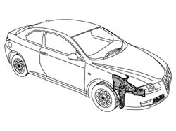
Applies to: all engines; all production periods
1. Use a pneumatic saw to cut along the lines shown in the figure and remove the side panel.
2. Use a circular saw to cut the side panel, following the cutting lines shown in the figure.
Use a rotary brush to clean the areas to expose the weld spots.
3. Crop the spot welds shown in the figure and trim away the excess sheet steel.
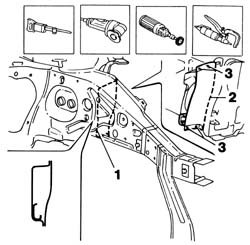
Applies to: all engines; all production periods
1. Use a chamfering machine to remove the spot welds, then remove the remaining reinforcement.
Straighten theedges using a mallet and profiled stake.
Use a grinding wheel to remove the weld spot residues.
2. Apply the electric weld paint finish.
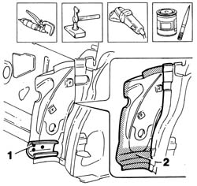
Applies to: all engines; all production periods
1. Cut the strut at the bench. Take care to leave a sufficiently wide section of steel to attach the new part to.
Use a rotary brush to remove the corrosion-proofing from around the inner and outer edge.
2. Apply electroweldable paint finish to the edges in contact with the car.
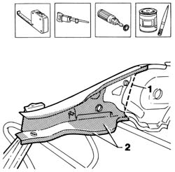
Applies to: all engines; all production periods
Refitting
Removing1. Lay the strut on the car and position correctly using a template and self-locking clips.
Check it is properly aligned.
2. Use a circular saw to trim the panel and remove excess parts.
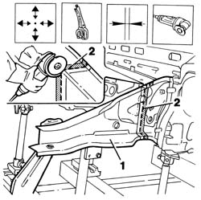
Applies to: all engines; all production periods
1. Use a MIG welder to seam weld the strut.
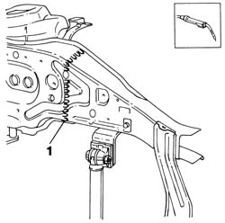
Applies to: all engines; all production periods
Use a rotary brush to remove the corrosion-proofing from the areas shown in the figure.
1. Apply electroweldable paint finish to edges in contact with the strut.
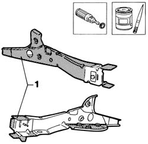
Applies to: all engines; all production periods
1. Fit the power unit attachment reinforcement correctly to the car using a template and self-locking clips.
2. Use a spot welder to weld the areas shown in the figure.
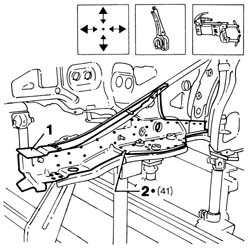
Applies to: all engines; all production periods
1. Cut the side panel at the bench. Take care to leave a sufficiently wide section of steel to attach the new part to.
Use a rotary brush to remove the corrosion-proofing from the areas shown in the figure.
2. Apply electric weld paint finish to the edges to be welded.
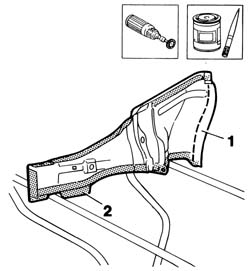
Applies to: all engines; all production periods
1. Lay the side panel in place and position correctly using self-locking clips.
2. Position the front side panel connection beam and apply a few weld spots. Check the correct positioning
3. Use a circular saw to trim the panel and remove excess parts.
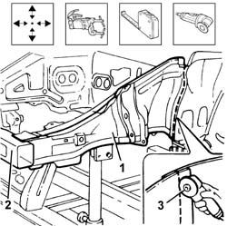
Applies to: all engines; all production periods
1. Use a rotary brush to clean the areas shown after removing the part.
Use a grinding wheel to remove spot weld residues from the power unit attachment reinforcement.
2. Apply the electric weld paint finish.
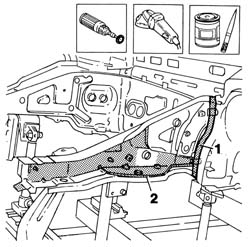
Applies to: all engines; all production periods
1. Position the side panel on the car using self-locking clips.
2. Use a MIG welder to carry out the seam welding.
3. Use a spot welder to weld the areas shown.
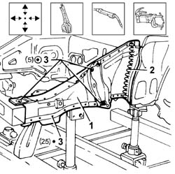
Applies to: all engines; all production periods
1. Correct any deformations in the panel using a profiled stake and mallet.
Use a grinding wheel to level weld residues and remove.
Use a rotary brush to clean the treated areas.
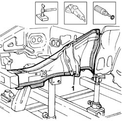
Applies to: all engines; all production periods
1. Apply rust-proofing to newly-welded areas.
2. Seal the joint lines shown in the figure.
Apply paint.
3. Apply wax oil inside the side panel.
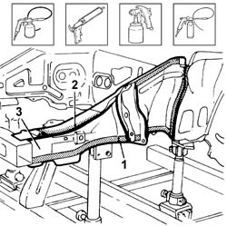
Applies to: all engines; all production periods